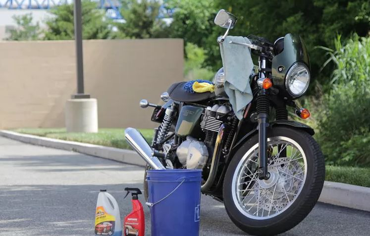

If you want to keep your motorcycle clean, you have two options: wash it, or keep it covered, in a garage, and only bring it out for photos when your social media profile needs rejuvenating.
Knowing how to wash a motorcycle correctly will save you time, money, and more than a little disappointment along the way. Cleaning a motorcycle not only removes corrosive substances (i.e. road salt and grime) from important parts and finishes, but is also is a great opportunity for you to look over the bike carefully for any structural or connection issues that may not be immediately evident from your daily perch in the saddle.
Step 1: Get your cleaning supplies togetherThe best way to wash your motorcycle always starts with ensuring you have what you need to get the job done, and done right. Few things are as frustrating as clearing your schedule, rolling your motorcycle into position, cracking open a beer, and then realizing that you don’t have the right supplies to get started.
There are plenty of motorcycle cleaners to choose from, so you don't have to make do with something else. All that glitters is not gold, and all that makes suds is not meant to clean motorcycles. From detailing spray to rinseless wash, when selecting products to clean a motorcycle, be sure they are designed for that purpose.
The less you touch your motorcycle while cleaning it, the better (more on this later). However, when you must touch the motorcycle, make sure you have the right materials for the task:
-Sponges: Great for gently removing stuck-on grime without damaging finishes, but be sure they do not pick up pieces of dirt in the process or they can scratch your paint.
-Brushes: Mainly designed for areas like spoked wheels that can handle a bit of elbow grease, but should be used in a very limited capacity, and only when other methods of dirt removal fall short.
-Cloths and flannels: These work great for the initial drying pass post wash.
-Chamios: Ultra-absorbent leather cloth that is safe for all surfaces.
-Microfiber: Best for the finishing touches and final pass with detailing spray. Microfiber does a great job of trapping leftover dust, lint, etc.
Step 2: Get your work area in orderOnce you have everything you need in order to properly clean your motorcycle, you will want to be sure that both your motorcycle and your work area are ready to go. First, before you begin, make sure the motorcycle is cool. Like a temperamental toddler, your motorcycle needs to be in the right mood for its bath. A hot engine + cold water = thermal shock. When metal gets hot, molecules expand. A quick shot of cold water creates an unceremonious snap back that could cause damage.
You'll also want to avoid working in direct sunlight, which will make the soap dry faster and thus will make it much more difficult to do a good job cleaning your motorcycle by increasing the probability of streaks and water spots.
Step 3: Plug exhaust holesWhile your motorcycle is generally pretty resilient when it comes to water, it never hurts to plug your exhaust with something like the Bike Master Muffler Rubber Plug. You can also just stuff a rag in the exhaust hole, or simply cover it with a rubber glove in order to keep the water out. This step is most commonly seen with dirt bike riders, but is something to consider for all motorcycles that feature exhausts that are angled in a way that would allow substantial amounts of water to pool in them during the washing process.
Step 4: Give the motorcycle a quick spritzIn general terms, the less friction applied while cleaning a motorcycle, the better. The more you rub and scrub, the more likely you are to have your sponge pick up small particles of dirt and then grind them over delicate surfaces. To lessen the likelihood of this, spray down the entire motorcycle with a combination of motorcycle cleaner and water prior to touching it with anything else. This will help loosen up some of the gunk and wash it away before you finish it off with elbow grease.
Start with a spray cleaner. Motorcycle spray cleaners should be applied to a dry bike before rinsing. They work to take a first pass at loosening up dried muck, bugs, and other unsavory remnants of the road.
Then rinse the motorcycle. After letting the motorcycle spray cleaner do its job (be sure to read the directions on how long to let it sit!), you will want to rinse it away with a standard-pressure hose. While rockin’ a power washer sounds like an efficient and fun method of doing this, don’t! Unlike the siding on your house, your motorcycle has a multitude of intricate pieces that power washers can damage.
Step 5: Suds up your motorcycleAfter your initial pass with the hose, you can start getting to the meat of the process of cleaning your motorcycle. This is the part everyone thinks of when they think “motorcycle wash.” As always, be very careful with the amount of force you employ.
Here are some other tips to make the job easier:
-Start at the top of your motorcycle and work down.
-Ensure that the solution you are using is right for the surface that you are using it on.
-If your sponge picks up any dirt, grime, grease, etc., be sure to clean it thoroughly or swap it out before continuing. You will also want to change out the wash bucket, as grit and grime have a tendency to pool at the bottom.
Water and soap will spill on your bike's chain and brakes of your bike. This is to be expected (more on that later). However, you should not be scrubbing these areas as the coating on each is part of what makes them function correctly.
Step 6: Rinse your motorcycleThis step should happen relatively quickly after lathering up your ride. You don’t want to let soap dry on your motorcycle as it will cause swirls and streaks that are hard to remove. Don’t be afraid to be thorough here. You really want to splash away any residue, so get at it from all the angles.
Step 7: Dry the motorcycleRather quickly after washing a motorcycle, you should dry it thoroughly. Water left in creases and crevices over time can cause corrosion. One of the best ways to do this is to use an air blower of some type (leaf/snow blower, shop vac on reverse, etc). This allows for a hands-off approach that will reduce swirls and save you some energy.
If you prefer a more tactical approach, you can always use something like the S100 Drying Towel or natural chamois to gently wipe away any excess water droplets.
A lot of people will take their bike out for a ride as a way to finish off the drying process. While this is a much more fun way of getting the job done, it’s important to note that if your bike has fairings, the air may be deflected away from some areas, which will stay wet. Additionally, you will need to be sure to ride long enough for your engine to get hot enough (for enough time) to really get the excess water to evaporate.
When riding your motorcycle for the first time post-wash, your brakes will most likely perform somewhat differently as they work off any excess water. It is best to ride cautiously and work them out at low speed prior to hitting the streets at full force.
Step 8: Re-lube the motorcycle chainIn a perfect world, the exact parts of your bike that you wanted to clean would get hit with precisely the right amount of water and cleaning solution. The world, however, is not perfect. By this point, you will have undoubtedly splashed more than a little bit of cleaning spray or soapy water over lubed up parts of your bike. Most notably, the motorcycle chain. Your best bet is to ensure that you have re-lubed prior to logging any more miles.
Step 9: Waxing a motorcycleBy this point, your motorcycle is clean. You have aggressively taken the fight to the opponent and come out victorious. However, diligence is key, and with that comes the need for defense of your masterpiece. The processes for polishing and waxing a motorcycle are an article unto themselves, and as noted above, we won’t be getting deep into the details here. If you are interested in hearing more on the topic, be sure to leave us a note in the comments and we will get it addressed.
Waxing your motorcycle will make the most of your motorcycle cleaning. A product like S100 Carnauba Paste Wax will seal in the glistening goodness of your paint while simultaneously protecting it from degradation handed down from the elements.
While wax levels out and protects imperfections in surfaces, polishing shaves them down entirely. Honestly, you really shouldn’t be polishing, as it is literally cutting away layers of your clear coat on each pass.
A final note on washing your motorcycleAs you can imagine, there are many ways folks go about this task of cleaning their bikes. From a deep understanding of the chemistry between solutions and materials, to a litany of other tools, tips, and tricks gained through various experiences, there are almost an infinite amount of additional thoughts on the topic. There are alternate methods, additional tools, various motorcycle cleaning products, and a multitude of opinions on the matter. So, if there is something that you feel we missed, or if you have a question that pertains to a specific aspect of cleaning your motorcycle, hit us up in the comments and we will be happy to discuss.